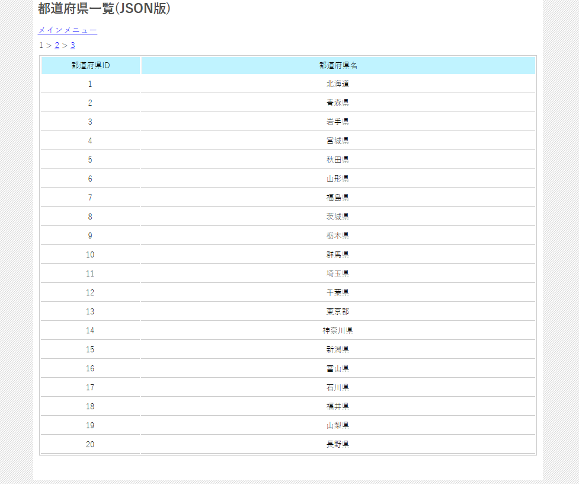

図0301a
まず、リンク先を見ていただくと、これまではPHPファイルでしたが、今回は/source/prefecture_list_json.htmlになってるのがわかると思います。そうです、今回は通常のHTMLドキュメントがサンプルになります。
１、/source/prefecture_list_json.htmlにリクエスト ２、HTMLロード時に/source/prefecture_list_json.phpにリクエスト ３、PHPからJSONデータのレスポンスを得る ４、JavaScript（AJax）で文書成型
１、ページリンククリックで/source/prefecture_list_json.phpにリクエスト ２、PHPからJSONデータのレスポンスを得る ３、JavaScript（AJax）で文書成型
{"allcount":"48","limit":20,"page":1,
"rowdata":[
{"prefecture_id":"1","prefecture_name":"\u5317\u6d77\u9053"},
{"prefecture_id":"2","prefecture_name":"\u9752\u68ee\u770c"},
....以下省略
//ライブラリをインクルード
require_once("inc_base.php");
require_once($CMS_COMMON_INCLUDE_DIR . "libs.php");
//ページの設定
//デフォルトは1
$page = 1;
//もしページが指定されていたら
if(isset($_GET['page'])
//なおかつ、数字だったら
&& cutil::is_number($_GET['page'])
//なおかつ、0より大きかったら
&& $_GET['page'] > 0){
//パラメータを設定
$page = $_GET['page'];
}
//1ページのリミット
$limit = 20;
$rows = array();
//データの読み込み
readdata();
//一覧データをjsonで返す
echo json_encode($rows);
/////////////////////////////////////////////////////////////////
/// 関数ブロック
/////////////////////////////////////////////////////////////////
//--------------------------------------------------------------------------------------
/*!
@brief データ読み込み
@return なし
*/
//--------------------------------------------------------------------------------------
function readdata(){
global $limit;
global $rows;
global $page;
$obj = new cprefecture();
$allcount = $obj->get_all_count(false);
$rows['allcount'] = $allcount;
$rows['limit'] = $limit;
$rows['page'] = $page;
$from = ($page - 1) * $limit;
$rows['rowdata'] = $obj->get_all(false,$from,$limit);
}
function read_phpdata(pageid){
$.ajax({
type: "GET",
url: "prefecture_list_json.php",
data: "page=" + pageid.toString(),
dataType: "json",
crossDomain: false,
scriptCharset: 'utf-8'
}).done(function(data){
// 成功
//ページブロックの書き出し
var PageStr = "";
var pagemax = Number(data.allcount) / Number(data.limit);
if(Number(data.allcount) % Number(data.limit)){
pagemax++;
}
if(pagemax > 1){
for (var i = 1; i <= pagemax; i++){
if(i != 1){
PageStr += ' > ';
}
if(i == Number(data.page)){
PageStr += i.toString();
}
else{
PageStr +=
'<a href=\"javascript:void(0);\" onClick=\"read_phpdata('
+ i.toString()
+ ');\" >'
+ i.toString()
+ '</a>';
}
}
}
$('#pageBlock').html(PageStr);
//一覧ブロックの書き出し
$('#dataTable').find("tr:gt(0)").remove();
for (var i = 0; i< data.rowdata.length; i++){
$('#dataTable').append(
'<tr><td width="20%" class="center">'
+ data.rowdata[i].prefecture_id
+ '</td><td width="80%" class="center">'
+ data.rowdata[i].prefecture_name
+'</td></tr>');
}
}).fail(function(jqXHR,textStatus, errorThrown){
// エラーの場合処理
$("#pageBlock").text("エラーが発生しました："
+ jqXHR.status + ": " + errorThrown);
});
}
<link href="css/main.css" rel="stylesheet" type="text/css">